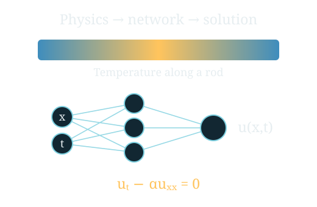

Series 01
Physics-informed neural networks
One paper, one implementation. Start with Raissi et al. (2017), then progress towards advanced PINNs and applications through small CPU experiments.

Learn with Professor Vee
A growing collection of topic-based courses, prepared with the Professor Vee teaching agent. Each series connects animated physical models, equations and computational experiments.
One paper, one implementation. Start with Raissi et al. (2017), then progress towards advanced PINNs and applications through small CPU experiments.

PINNs is the first series. Future paper- and topic-based courses will appear here as separate series with their own chapters, teaching materials and classroom.
Published classrooms play prepared recordings and animations. Live questions and generation of new supplementary slides run in the local teaching application.